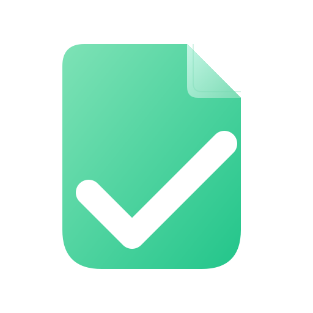

01
Бесплатная проверка
Пользователь отправляет файл .docx и получает полезный базовый PDF-отчёт с категориями, рекомендациями и примерами проблемных мест.
Telegram-бот для студентов
Чистовик помогает быстро найти ошибки оформления, получить понятный PDF-отчёт и аккуратно исправить типовые проблемы в файле .docx.

Сценарий
Три понятных шага: загрузить документ, получить отчёт, при необходимости заказать аккуратную правку.
Пользователь отправляет файл .docx и получает полезный базовый PDF-отчёт с категориями, рекомендациями и примерами проблемных мест.
За 1 токен бот выполняет бережную автоправку одного документа, повторно проверяет результат и готовит подробный отчёт.
Формируются исходник, файл с подсветкой проблем, исправленная копия и подробный отчёт.
Режимы
Базовый отчёт помогает самостоятельно исправить основные ошибки. Полный пакет экономит время и даёт готовую исправленную копию для финальной проверки.
Важно: автоправка сокращает объём ручной работы, но не исправляет документ полностью под чистовую. Перед сдачей обязательно проверьте результат и оставшиеся замечания.
Польза
Чистовик нужен как быстрый помощник перед сдачей: подсветить ошибки, объяснить замечания и снизить риск технических недочётов в документе.
Отчёт показывает, с чего начать, какие ошибки повторяются и где правка даст максимум результата.
Полный пакет берёт на себя типовые правки оформления и собирает все версии документа в один ZIP.
Перед отправкой вы видите понятный итог: что найдено, что исправлено и что стоит проверить вручную.
Чистовик является вспомогательным инструментом. Автоправка не заменяет финальную ручную проверку: перед отправкой преподавателю нужно самостоятельно проверить отчёт и итоговый документ.